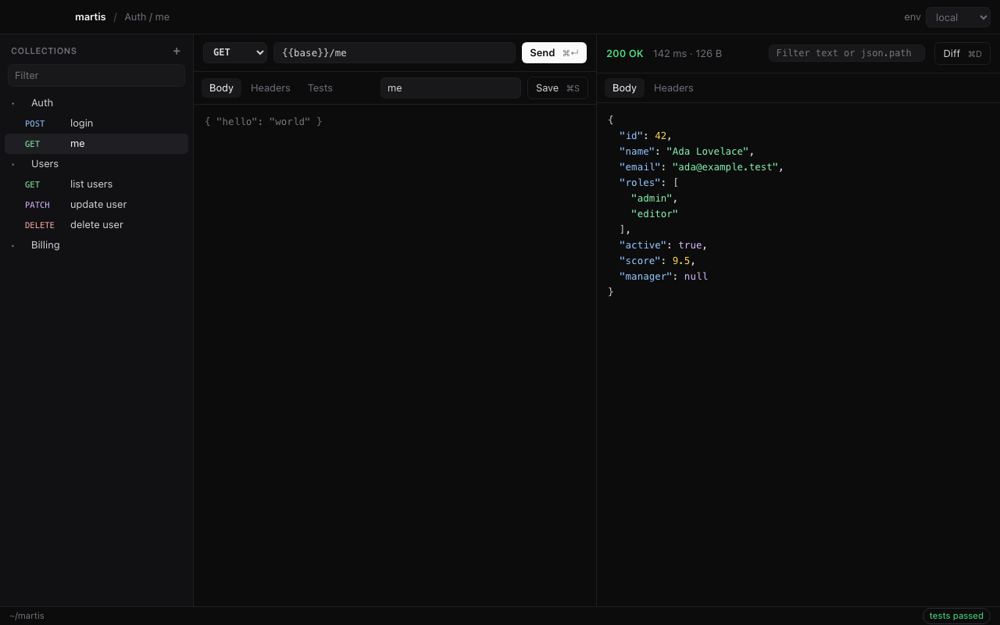
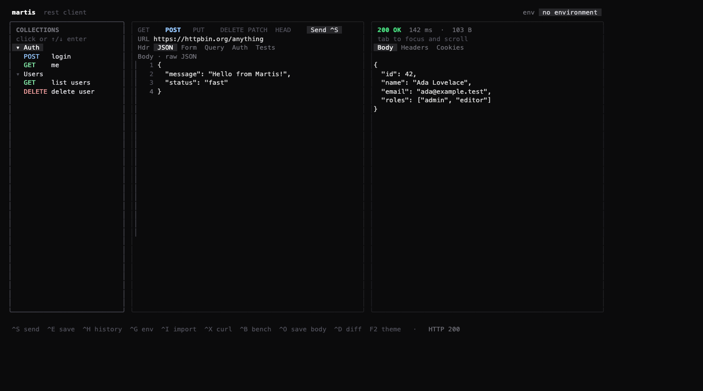

Martis
REST client ringan untuk macOS dan Linux. Aplikasi desktop dan TUI terminal dalam satu, berbagi collection yang sama. Dibuat dengan Go, tanpa Electron.
"3,000 worlds, and not a single worthy API client... until now."

~/martis.martis run menjalankan satu folder dan gagal bila ada test yang tidak lolos.Instalasi
macOS (disarankan)
Pasang TUI dan aplikasi desktop sekaligus. Gratis, tanpa peringatan Gatekeeper, dan Martis langsung bisa dicari lewat Spotlight.
curl -fsSL https://raw.githubusercontent.com/wahyuakbarwibowo/martis/main/install.sh | MARTIS_DESKTOP=1 bashSkrip memasang Martis.app ke /Applications (atau ~/Applications tanpa akses admin), serta martis dan martis-desktop ke PATH. Jalankan dari aplikasi terminal biasa agar sudo bisa meminta password.
Alternatif .dmg: unduh Martis_<versi>_arm64.dmg (Apple Silicon) atau _amd64.dmg (Intel) dari Releases, lalu seret Martis ke Applications. Aplikasi belum dinotarisasi Apple, jadi saat pertama dibuka klik kanan Martis → Open.
Linux
Debian/Ubuntu: unduh martis-desktop_<versi>_amd64.deb atau _arm64.deb, lalu:
sudo apt install ./martis-desktop_*.debDistro lain: pakai skrip yang sama seperti macOS. Martis akan muncul di menu aplikasi. Aplikasi desktop butuh WebKitGTK 4.1 (libwebkit2gtk-4.1-0 di Debian/Ubuntu, webkit2gtk4.1 di Fedora).
TUI saja
curl -fsSL https://raw.githubusercontent.com/wahyuakbarwibowo/martis/main/install.sh | bashBinary TUI untuk Windows tersedia di halaman Releases. Alternatif lain: go install github.com/wahyuakbarwibowo/martis@latest.
Opsi skrip: VERSION=v0.7.0 untuk versi tertentu, INSTALL_DIR=... untuk lokasi lain. Setiap unduhan diverifikasi dengan checksum.
Dari source
git clone https://github.com/wahyuakbarwibowo/martis.git
cd martis
make install # pasang TUI
make desktop-run # build lalu buka aplikasi desktop (butuh CGO)
make desktop-app # kemas Martis.app + .dmg (macOS) atau .deb (Linux)Cara membuka
Martis Desktop
- macOS: tekan ⌘ Space, ketik Martis, Enter. Bisa juga dari Launchpad, Dock, atau
martis-desktopdi terminal. - Linux: cari Martis di menu aplikasi, atau jalankan
martis-desktop.
TUI
martis # buka TUI
martis https://api.example.com/users # langsung dengan URL ini
martis curl -H 'Accept: application/json' https://api.example.comKeluar dengan q atau Ctrl C.

Update
martis updateMengecek versi terbaru, berhenti bila sudah terbaru, lalu memasang ulang di lokasi yang sama. Aplikasi desktop ikut diperbarui bila terpasang. martis upgrade juga bisa dipakai.
Membuat request
Pilih method, isi URL, lalu kirim dengan ⌘ ↵ (desktop) atau Ctrl S (TUI). Tab yang tersedia:
- Body: JSON mentah. Rapikan dengan ⇧ ⌘ F (desktop) atau F4 (TUI).
- Headers: satu baris per header, format
Key: Value. - Tests: assertion dan pengambilan variabel (lihat Tests).
- GraphQL: query dan variables (lihat GraphQL).
- Khusus TUI: Form untuk multipart (
field=value,@file=/path), Query yang sinkron dengan URL, dan Auth dengan preset Bearer, Basic, API key, dan OAuth 2.0 (F3).
Simpan request ke collection dengan ⌘ S (desktop) atau Ctrl E (TUI).
Environment & variabel
Buat file .env di ~/martis/environments/, satu file per environment:
# ~/martis/environments/local.env
base_url=http://localhost:8080
token="rahasia"Pakai {{base_url}} atau {{token}} di URL, header, body, maupun auth. Pilih environment aktif lewat dropdown env (desktop) atau Ctrl G (TUI).
Tests & request berantai
Tulis satu aturan per baris di tab Tests:
Status == 200
json.data.id != nil
set token = json.access_tokenStatus == Nmemeriksa kode status.json.path != nilmemastikan field ada. Path mendukung index array, misalnyajson.items.0.id.set nama = json.pathmenyimpan nilai ke environment aktif, sehingga request berikutnya bisa memakai{{nama}}.
POST /login berisi set token = json.access_token, lalu request lain memakai header Authorization: Bearer {{token}}. Nilai yang ditangkap berlaku selama sesi berjalan.Alat bantu response
- Format otomatis: response JSON selalu ditampilkan rapi.
- Filter: ketik teks untuk mencari baris, atau
json.data.0.nameuntuk mengambil nilai tertentu. Tombol ⌘ F (desktop) atau / (TUI). - Diff: bandingkan dengan response sukses sebelumnya lewat ⌘ D atau Ctrl D.
- Response besar & file: response di atas 1 MB atau berupa file (PDF, Excel, Word, gambar, ZIP, CSV, dll.) tidak langsung ditampilkan. Martis menunjukkan jenis, nama file, dan ukurannya, lalu kamu pilih Download (Ctrl O di TUI ke
~/Downloads, atau dialog simpan di desktop) atau Tampilkan (Enter / tombol Show; tidak tersedia untuk file biner).
GraphQL
Desktop: pilih GraphQL pada dropdown di bar tab Body, lalu isi query dan variables.
TUI: buka tab GQL. Tulis query, lalu baris ### variables diikuti JSON variables:
query ($id: ID!) {
user(id: $id) { name email }
}
### variables
{ "id": "{{user_id}}" }Martis mengirimnya sebagai {"query": ..., "variables": ...} dengan Content-Type: application/json. Variabel environment {{...}} berlaku di query maupun variables, dan request GraphQL ikut tersimpan di collection serta berjalan di martis run.
Server-Sent Events
Bila server menjawab dengan Content-Type: text/event-stream, setiap event tampil begitu datang, tidak perlu menunggu koneksi ditutup.
- Desktop: tombol Send berubah menjadi Stop selama stream terbuka; jumlah event tampil di atas panel response.
- TUI: status bar menampilkan jumlah event; tekan Ctrl S untuk menghentikan stream.
Agar tetap ringan, hanya sekitar 1 MB teks stream terakhir yang disimpan. Server yang tidak menjawab dalam 30 detik tetap dihentikan.
Import & export
martis import collection.json # Postman v2 atau OpenAPI 3
martis import staging.postman_environment.json # environment Postman → ~/martis/environmentsDi TUI, Ctrl I mengimpor perintah cURL dari clipboard dan Ctrl X mengekspor request aktif sebagai cURL.
Menjalankan di CI
martis run --env staging AuthMenjalankan semua request di folder Auth secara berurutan, meneruskan variabel hasil set, lalu keluar dengan kode 1 bila ada request atau test yang gagal (2 untuk kesalahan pemakaian).
Shortcut desktop
Di Linux, gunakan Ctrl sebagai pengganti ⌘.
| Shortcut | Aksi |
|---|---|
| ⌘ ↵ | Kirim request |
| ⌘ S | Simpan ke collection |
| ⌘ N | Request baru |
| ⌘ F | Filter response |
| ⇧ ⌘ F | Rapikan body JSON |
| ⌘ D | Diff dengan response sebelumnya |
Shortcut TUI
| Shortcut | Aksi |
|---|---|
| Tab / Shift Tab | Pindah fokus |
| Ctrl S | Kirim request (saat streaming: hentikan) |
| Ctrl E | Simpan ke collection |
| Ctrl P | Buka daftar collection |
| Ctrl N | Buat folder |
| Ctrl T | Ganti tab konfigurasi |
| Ctrl H | History request |
| Ctrl G | Pilih environment |
| Ctrl I / Ctrl X | Import / export cURL |
| Ctrl F | Pilih file (tab Form) |
| / | Filter teks atau json.path |
| Ctrl D | Diff response |
| Ctrl Y / Ctrl O | Salin / download response |
| Ctrl B | Benchmark request |
| F2 / F3 / F4 | Tema / preset auth / rapikan body JSON |
| ← → | Ganti method |
| ↑ ↓ j k | Scroll response atau navigasi sidebar |
| r / m / d | Rename / pindahkan / hapus item sidebar |
| q / Ctrl C | Keluar |
Perintah CLI
| Perintah | Fungsi |
|---|---|
martis | Buka TUI |
martis <url> / martis curl ... | Buka TUI dengan request tersebut |
martis run [--env nama] <folder> | Jalankan satu folder tanpa UI |
martis import <file> | Import Postman, OpenAPI, atau environment Postman |
martis collections | Tampilkan isi collection |
martis update | Perbarui ke rilis terbaru |
martis version / martis help | Versi / bantuan |
martis-desktop | Buka aplikasi desktop |
Lokasi data
| Path | Isi |
|---|---|
~/martis/collections.json | Folder dan request tersimpan |
~/martis/history.json | 100 request terakhir (TUI) |
~/martis/environments/*.env | File environment |
Request yang tersimpan bisa berisi token, jadi jangan membagikan folder ini sembarangan.
Kontribusi
Laporan bug, ide, dan pull request sangat disambut. Baca CONTRIBUTING.md, lalu buka issue. Celah keamanan dilaporkan secara privat lewat Security advisories.
Catatan
Martis adalah proyek iseng untuk belajar dan dipakai sendiri, bukan produk komersial dan tidak akan dikomersialkan. Nama dan gambar hero terinspirasi dari karakter Martis di Mobile Legends: Bang Bang, milik Moonton; proyek ini tidak berafiliasi dengan Moonton.